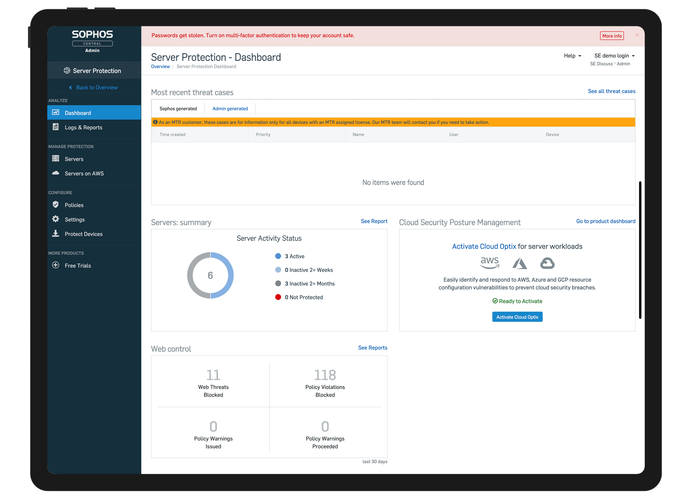
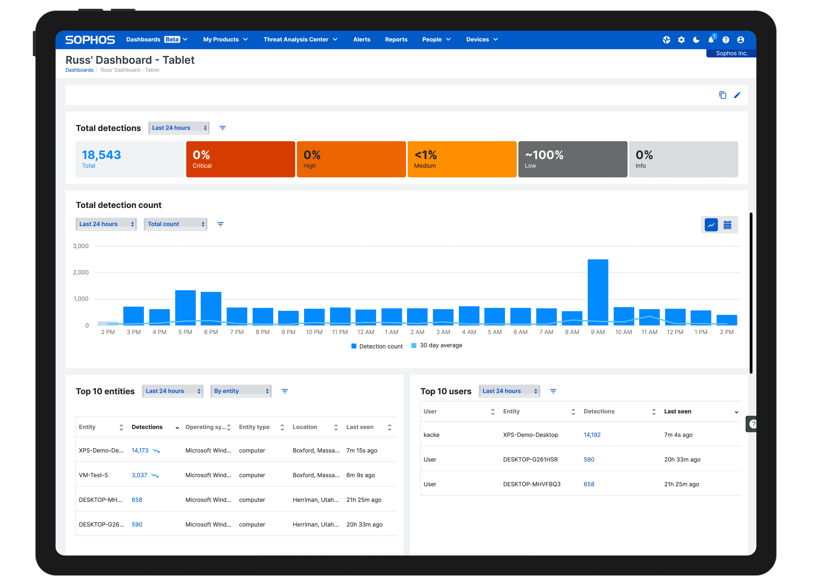

This case study showcases two distinct navigation redesign projects - delivered in very different contexts, but each solving a fundamental challenge: how to create a more usable, purposeful, and scalable navigation experience in a complex digital environment. Both projects demonstrate the ability to balance user needs, business goals, and technical constraints - whether working within tight platform limitations or rethinking an experience from the ground up.
As Sophos Central grew to include increasingly data-dense UIs like XDR and Custom Canvas, the left-hand navigation consumed critical horizontal real-estate. Users couldn't see enough of their data without scrolling or collapsing panels.
Nationwide.co.uk had deep structural navigation problems that made task completion harder than it needed to be. Users struggled to find what they were looking for, and the existing information architecture didn't reflect how customers actually thought about their needs.
The primary goal was to transition Sophos Central from a traditional left-hand navigation to a modern top-level mega navigation, in order to maximise horizontal space for complex, data-rich interfaces like XDR and Custom Canvas. Due to limited development bandwidth, we were constrained from restructuring the underlying IA, so the solution needed to overlay the existing system while still delivering a visibly modern, intuitive, and future-friendly navigation experience.
The transition required careful mapping of existing navigation items to a horizontal structure, designing clear mega-nav dropdown panels that surfaced sub-navigation intuitively, and ensuring the new pattern worked across the full range of Sophos Central products.
Successfully delivered a top-level mega nav that reclaimed significant horizontal screen real-estate for high-density product UIs, with no disruption to the underlying information architecture - completed in 2 months.

Sophos Central navigation transformation

Top-level mega navigation in context
Designed and delivered a new site-wide MegaNav for one of the UK's largest financial institutions, following extensive user research and information architecture analysis. Working collaboratively in an agile scrum team, the project involved deep IA research to understand how customers navigated the site and what they were looking for.
Conducted extensive card sorting and tree testing to understand user mental models. Identified structural gaps between how the existing navigation was organised and how customers expected to find products and services.
Designed a new mega navigation system that resolved the structural issues uncovered in research - improving task discoverability across the entire site and reclaiming critical screen real-estate for primary user journeys.
The transition to a top-level mega nav freed up significant horizontal space for data-dense UIs like XDR and Custom Canvas, enabling users to see and interact with more of their data without compromise.
Following the MegaNav launch, users were able to find products and services more efficiently - with structural navigation issues that had frustrated customers resolved through research-led IA redesign.
Both projects were grounded in genuine user research. Whether constrained by technical limitations or working with full design freedom, the approach consistently prioritised understanding real user behaviour before designing solutions.